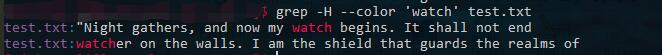
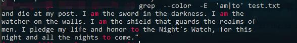

grep 总结
常见用法
示例文本：
“Night gathers, and now my watch begins. It shall not end
until my death. I shall take no wife, hold no lands, father no
children. I shall wear no crowns and win no glory. I shall live
and die at my post. I am the sword in the darkness. I am the
watcher on the walls. I am the shield that guards the realms of
men. I pledge my life and honor to the Night’s Watch, for this
night and all the nights to come.”
grep 'keyword' filename
在一个文件按照关键字查找
grep 'now' test.txt 输出
“Night gathers, and now my watch begins. It shall not end
grep -n
显示行号
grep -n 'now' test.txt 输出
1:”Night gathers, and now my watch begins. It shall not end
grep -i
忽略大小写
grep -i 'watch' test.txt 输出
“Night gathers, and now my watch begins. It shall not end
watcher on the walls. I am the shield that guards the realms of
men. I pledge my life and honor to the Night’s Watch, for this
grep -v
输出不包含 -v 后面关键字的行
grep -v 'watch' test.txt 输出
until my death. I shall take no wife, hold no lands, father no
children. I shall wear no crowns and win no glory. I shall live
and die at my post. I am the sword in the darkness. I am the
men. I pledge my life and honor to the Night’s Watch, for this
night and all the nights to come.”
grep -e
提供正则的支持，关键字中可以包含正则表达式
grep -B10
输出匹配行的同事， 也输出匹配行之前的10行（before）
grep -A10
输出匹配行的同时，也输出匹配行之后的10行（after）
grep -C10
输出匹配行的同时，输出之前和之后的10行
grep -o
只输出匹配的内容
grep -o 'watch' test.txt
watch
watch
grep -c
输出匹配的行数的个数
grep -ci 'watch' test.txt
3
grep -l
显示有匹配行的文件，只显示文件名称，不显示内容
grep -l 'watch' test.txt
test.txt
grep -H
在匹配行的前面同时输出文件名
grep -H 'watch' test.txt
test.txt:”Night gathers, and now my watch begins. It shall not end
test.txt:watcher on the walls. I am the shield that guards the realms of
高亮
grep –color
grep -H --color 'watch' test.txt

设置环境变量
在用户目录下的.bashrc中设置环境变量，也可以达到高亮的目的
1 | export GREP_OPTIONS='--color=auto' |
添加之后记得source ~/.bashrc, 然后才能生效
egrep
egrep 命令与 grep 命令带 -E 标志是一样的，除了错误消息和使用情况消息不同以及 -s 标志的功能不同之外。
多关键字
使用正则就可以同时搜索多个关键字
grep -E 'keyword1 | keyword2' filename
grep --color -E 'am | to' test.txt

zgrep
zgrep 可以在压缩文件中搜索内容